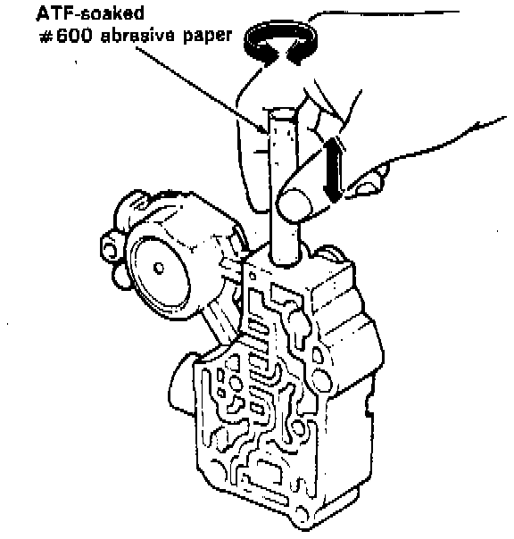
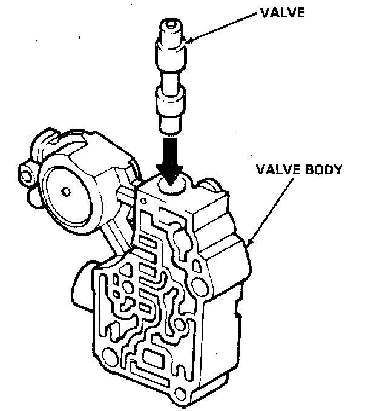

General Repair
NOTE: This repair is only necessary if one or more of the valves in a valve body do not slide smoothly in their bores. You may use this procedure to free the valves in the valve bodies.1. Soak a sheet of # 600 abrasive paper in ATF for about 30 minutes.
2. Carefully tap the valve body so the sticking valve drops out of its bore.
CAUTION: It may be necessary to use a small screwdriver to pry the the valve free. Be careful not to scratch the bore with the screwdriver.
3. Inspect the valve for any scuff marks. Use the ATF soaked # 600 paper to polish off any burrs that are on the valve, then wash the valve in solvent and dry it with compressed air.

4. Roll up half a sheet of ATF-soaked paper, and insert it in the valve bore of the sticking valve. Twist the paper slightly, so that it unrolls and fits the bore tightly, then polish the bore by twisting the paper as you push it in and out.
CAUTION: The valve body is aluminum and doesn't require much polishing to remove any burrs.
5. Remove the # 600 paper and thoroughly wash the entire valve body in solvent, then dry with compressed air.

6. Coat the valve with ATF then drop it into its bore. It should drop to the bottom of the bore under its own weight. If not, repeat step 4 then retest.
7. Remove the valve, and thoroughly clean it and the valve body with solvent. Dry all parts with compressed air, then reassemble using ATF as a lubricant.